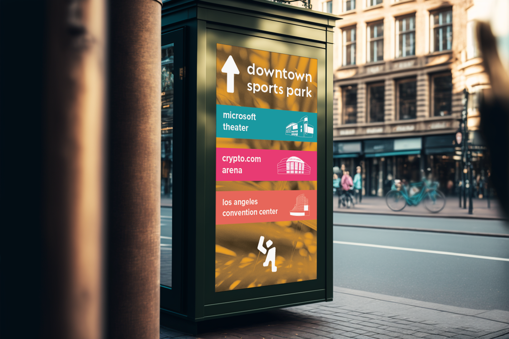
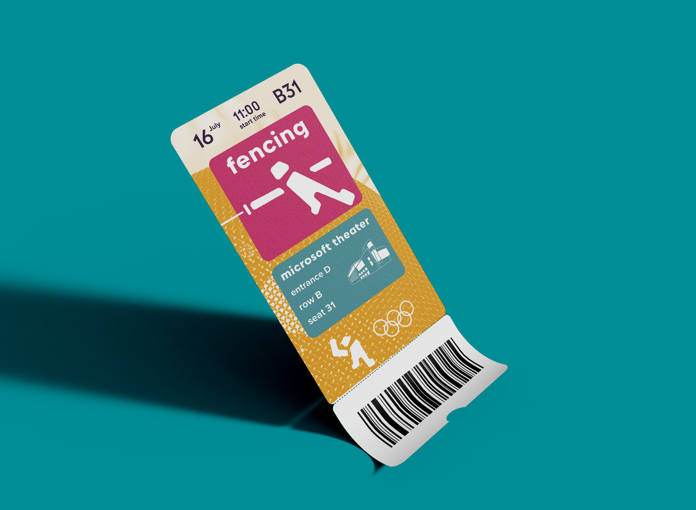
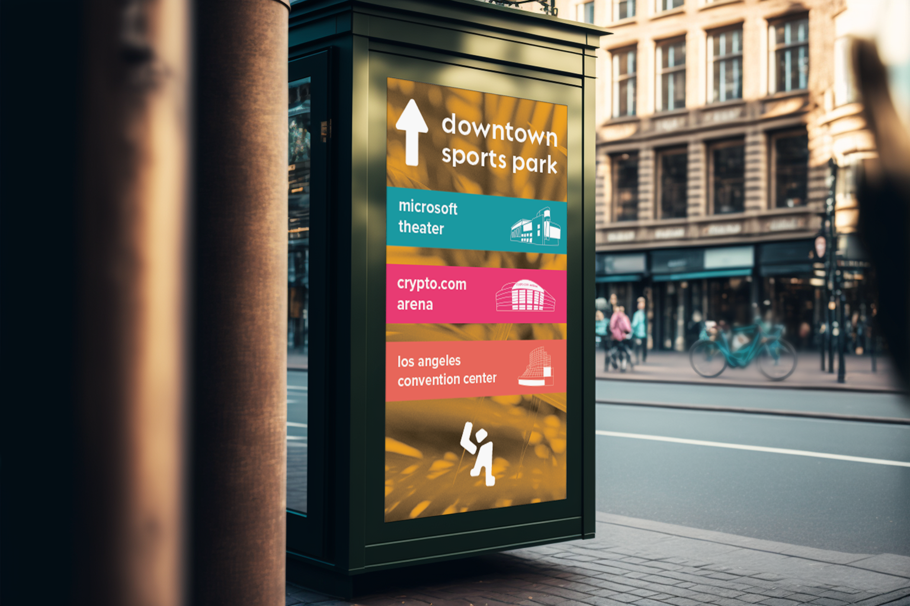
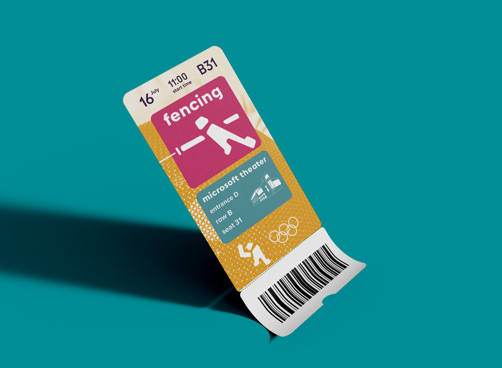

los angeles 2028 olympics
skills
graphic design ui / ux brand identitytimeline
january 2023 - may 2023overview
a project in my type & image course. each student was assigned a host city of the olympics, and tasked with creating a visual identity system to represent it. i was given los angeles, and chose three words to be the basis of my designs: inviting, diverse, and kinetic.
initial research
the olympics present an interesting design challenge: you are not only designing for the host city, you are designing for the entire world. this city must be properly represented, while also making visiting countries feel welcome. beginning with the city of los angeles, i knew my visual identity would be bold, bright, and inviting. after a lot of iterating, i ended up incorporating aspects of la into the final logo, and creating a visual identity that embraces the character of both los angeles and the olympic games themselves.
logo and style guide
the logo is inspired by the geographical shape of la, incorporates abstractions of the letters "l" and "a," and forms the image of a person waving, welcoming different countries to the olympics and bringing a kinetic element into the logo. the color palette is bright and playful, keeping the visual system inviting while also paying homage to the color palette of the la olympics in 1984.
deliverables
moving forward with a finalized style guide, i began experimenting with the photo treatments i wanted to employ in my designs. many of my designs incorporate bold sports photography, edited to fit in with my bright color palette, overlaid with typical scenes you associate with la: landscapes, palm trees, etc. as i'm interested in the user experience, i chose to work with products that need a successful interface: wayfinding, maps and schedules, tickets, and email newsletters. At an event with so many international visitors, it is essential that the city is as easy to navigate as possible.
 




reflection
wow! i did so much. i really am the best.